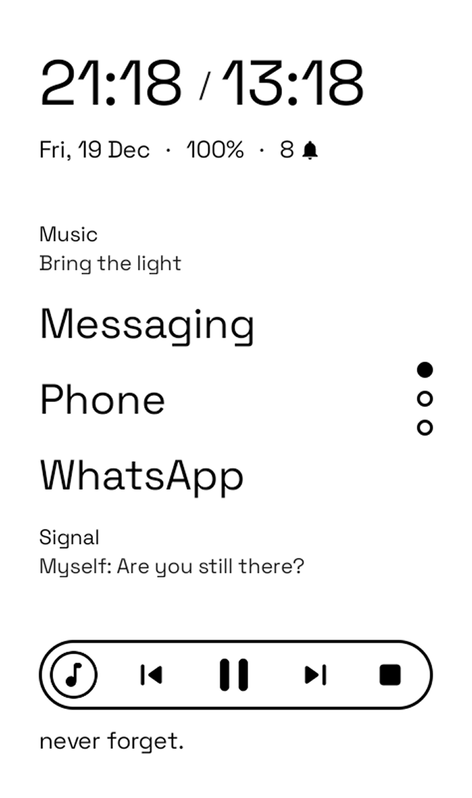
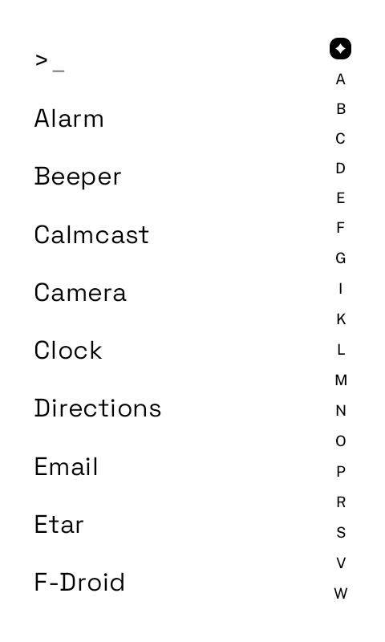
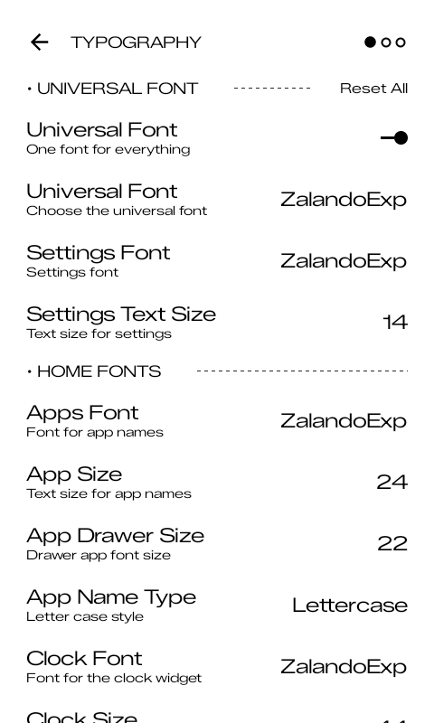
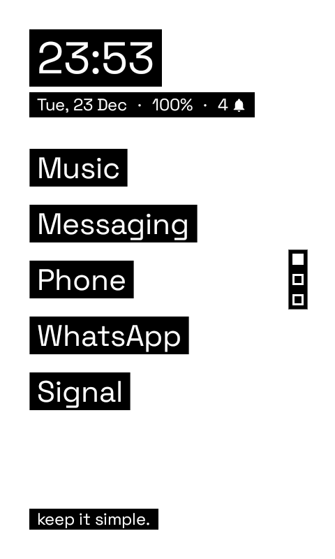
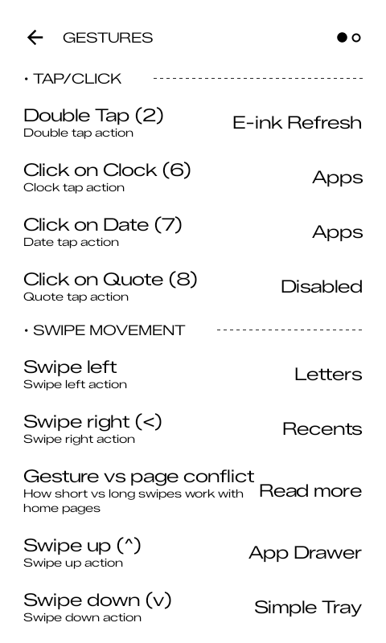
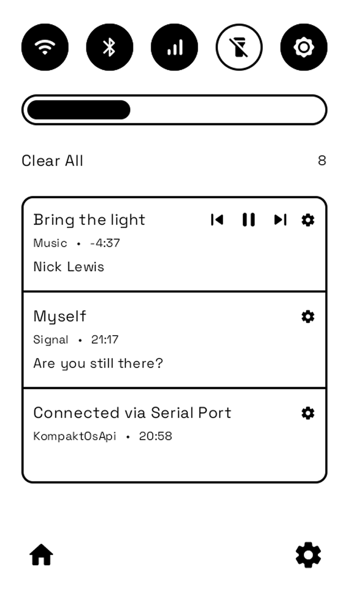
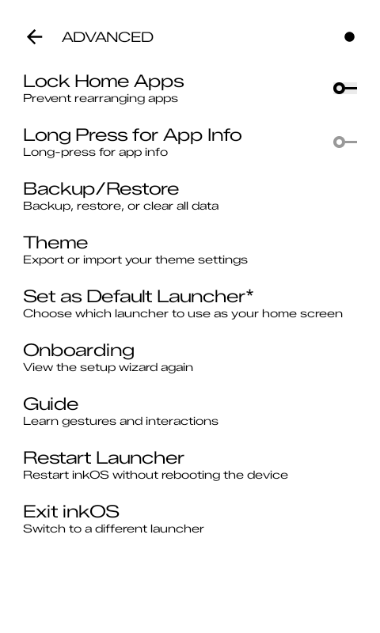
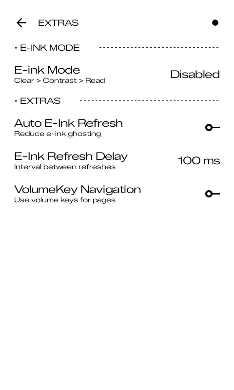

150+ settings. Zero compromises. Every part of your home screen is configurable.
Layout, widgets, pages, spacing, alignment.

Set how many apps appear on the home screen with multi-page support. Swipe or use volume keys to navigate between pages.
Set horizontal alignment (left, center, right) for apps, clock, date, and quote independently. Adjust the vertical Y offset to position apps exactly where you want.
Control the gap between home app items, top widget margin for the clock/date area, and bottom widget margin for media/quote.
Default, Box Solid, Box Outline, Flip, Round, Analog, Split, Horizontal, Stacked. Choose system, 24-hour, or 12-hour format with optional AM/PM.
Enable a second clock display with a configurable timezone hour offset.
Toggle date and battery percentage independently. Five date formats available. Configurable notification count source.
Automatically appears when audio is playing, remains visible even when paused, and can be dismissed by pressing stop.
Choose from Quote, Events, Android Widget, Shortcuts, Total Usage, or Page Dots. Each type has its own settings for content and alignment.
Embed any native Android widget on your home screen with configurable height and margin controls.
Extends the full horizontal area of app names to be clickable. Much easier to tap on E-ink displays.
Displays dots to indicate your current page. Optional auto-reset returns you to the first page when pressing home.
Displays the total count of pending notifications in the date row. Configurable source from Simple Tray or Letters.
Add left and right shortcut buttons to the bottom widget area. Each button has a configurable icon and action.
Display upcoming calendar events on your home screen. Choose which calendar to pull from and filter by time range.
Search, filter, hide, rename.

Alphabetical sidebar for quick navigation. Jump to any letter instantly in a long app list.
Sort apps alphabetically, by most used, or by last used. Combine with A-Z filtering for fast access.
Built-in search with auto-show keyboard and auto-launch first result. Also searches contacts, web, settings, music, and files.
Hide apps into a separate hidden list. Rename any app with a custom alias. Lock sensitive apps behind fingerprint or PIN.
Control app item size, padding, alignment (left, center, right), and whether to show icons in the drawer.
Access and configure app shortcuts directly from the drawer. View available shortcuts for installed apps.
Automatically hide apps that are already on the home screen from the app drawer to reduce clutter.
Long press any app for quick actions: uninstall, rename, hide, lock behind biometrics, or open system app info.
Fonts, sizes, custom files.

Clock, date, apps, quote, settings, and notifications each get their own font family. Use a display font for the clock and a readable one for app names.
Independent text size controls for every typographic element: clock, date, apps, quote, settings menus, notification titles, and body text.
Load any .ttf or .otf file directly from your device storage. Use your favorite typeface for any element in the launcher.
Set a single font family for all elements at once. Tip: enable universal mode, pick a font, then disable it to customize individual elements while keeping the base.
Choose between Normal, Small Caps, or All Caps for app names on the home screen and app drawer.
Separate font family and size for notification preview text that appears below app names on the home screen.
Set separate font families and sizes for the Letters window title and body text. The window title string itself is also customizable.
Separate font family and text size for all settings menus. Disabled when universal font is active.
Themes, colors, wallpapers, scale.

Switch between light, dark, and system-follow themes. One-tap preset themes optimized for E-ink and AMOLED.
Set any image as your background. Adjust background color opacity to control how much the image shows through. Built-in dithering for E-ink screens.
Set custom background, text, and label colors with a full color editor. One-tap reset to default black/white based on theme.
Four icon modes: text Letters, inkOS tinted monochrome, System adaptive icons, or third-party Icon Packs from the Play Store.
Separate shape controls for icons (pill, rounded, square) and button corners. Mix and match to get the exact look you want.
Add rounded pill-shaped backgrounds behind text elements. Invert the colors so white text on black becomes black text on white, or vice versa.
Show or hide the status bar and the navigation bar independently for a cleaner fullscreen look.
Enable or disable haptic feedback for gestures, app launches, widget taps, and other interactions.
Adjust the uniform scale of all UI elements. Choose from Auto, Tiny, Small, Medium, Large, or Huge.
Swipes, taps, actions.

Up, down, left, and right swipes, each independently assignable to any action: open an app, launch the drawer, lock screen, e-ink refresh, and more.
Assign any action to double-tap on the home screen: open any installed app, lock screen, open drawer, show recents, toggle private space, and 15+ more options.
Clock, date, and quote widgets each have their own configurable tap action. Assign any of the 15+ actions to each widget independently.
Open any app, app drawer, notifications, recents, simple tray, e-ink refresh, brightness toggle, lock screen, quick settings, power dialog, restart launcher, exit inkOS, toggle private space, and more.
Adjust short and long swipe threshold ratios independently. Make swipes more or less sensitive to match your screen and preference.
Enable the system back gesture from screen edges. Works alongside inkOS swipe gestures without conflict.
Badges, previews, tray.

Adds a * character next to app names that have pending notifications. Configurable per-app via allowlist.
Shows actual notification content below app names on the home screen. Configurable character limit for layout stability.
Show an indicator beside apps currently playing media. Optionally display the currently playing track name on the home screen.
A dedicated screen for reading full notification messages. Automatically clears conversations when you open the corresponding app. Accessible via gesture or keypad.
A paginated notification tray with configurable density and optional bottom navigation. Has its own separate app allowlist.
Three separate allowlists let you control which apps show notifications on the home screen badges, in the notification window, and in the simple tray independently.
Fine-tune chat notification previews: toggle the sender's name, conversation/group name, and message content independently for maximum control over what's visible.
Backup, lock, launcher control.

Export your entire setup to a file for safe keeping or device migration. Restore in seconds. Clear all data to start fresh.
Prevent accidental changes to your home screen layout. When locked, long-press opens system app info instead of the edit dialog.
Require fingerprint or PIN to access the settings menu. Prevents accidental or unauthorized changes.
Set inkOS as your default launcher or switch back to another launcher at any time.
Restart inkOS without rebooting your device. Useful after importing a backup or resolving a display issue.
Android 15+ Private Space support. Toggle lock/unlock via gesture or the shield icon in the app drawer sidebar. Private apps appear in a separate filtered view, hidden from the main list.
E-ink, keypad, navigation.

Automatic screen refresh after exiting apps to clear ghosting. Configurable delay. Option to limit refresh to the home screen only.
Special tap handling optimized for Mudita Kompakt and similar E-ink Android devices.
Navigate between home screen pages using volume up/down buttons. Essential for E-ink and keypad devices.
Full T9 and D-pad support for non-touch navigation. QWERTY keyboard navigation for devices like Titan Pocket.